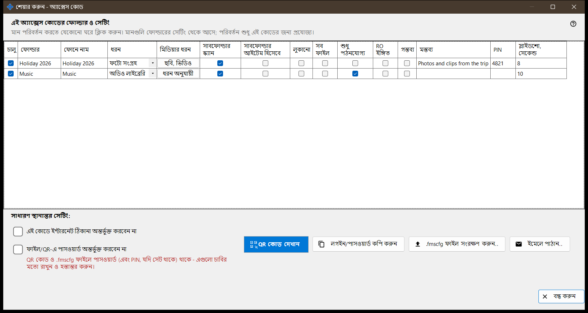
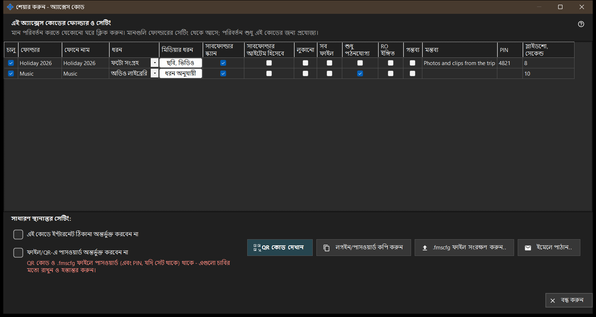

শেয়ার করুন - অ্যাক্সেস কোড
এটি কীসের জন্য
ফোনের জন্য অ্যাক্সেস কোড তৈরি করে: একটি QR কোড ও একটি .fmscfg ফাইল, যাতে ঠিকানা, লগইন ও বেছে নেওয়া ফোল্ডার থাকে। শেয়ারিং চালু থাকলে এটি মূল উইন্ডোর শেয়ার করুন বোতাম থেকে খোলে, এবং কোড দেওয়ার আগে যাচাই করে ফোন সত্যিই পিসিতে পৌঁছাতে পারে কি না।


এই ক্রমে
- কোডে রাখার ফোল্ডারগুলোতে টিক দিন।
- এই কোডের জন্য যে ঘর আলাদা হওয়া দরকার, গ্রিডের সেই ঘর বদলান।
- দরকার হলে এই কোডে ইন্টারনেট ঠিকানা অন্তর্ভুক্ত করবেন না বা ফাইল/QR-এ পাসওয়ার্ড অন্তর্ভুক্ত করবেন না-তে টিক দিন।
- অ্যাক্সেস যাচাইয়ের জন্য অপেক্ষা করুন।
- QR কোড দেখান, .fmscfg ফাইল সংরক্ষণ করুন, ইমেলে পাঠান অথবা লগইন ও পাসওয়ার্ড কপি করুন।
উপাদানসমূহ
এই অ্যাক্সেস কোডের ফোল্ডার ও সেটিং
প্রতিটি শেয়ার করা ফোল্ডারের জন্য একটি সারি, কলামগুলো: চালু, ফোল্ডার, ফোনে নাম, ধরন, মিডিয়ার ধরন, সাবফোল্ডার স্ক্যান করুন, সাবফোল্ডার আইটেম হিসেবে, লুকানো, শুধু পঠনযোগ্য, RO ইঙ্গিত, গন্তব্য, মন্তব্য এবং স্লাইডশো, সেকেন্ড। বদলাতে ঘরে ক্লিক করুন। মান প্রতিটি ফোল্ডারের নিজস্ব সেটিং থেকে শুরু হয় এবং সম্পাদনা শুধু এই কোডে প্রযোজ্য। শুধু পঠনযোগ্য সার্ভারে সত্যিকারের তালা; RO ইঙ্গিত শুধু অ্যাপে সম্পাদনার বোতাম লুকায়। গন্তব্য ফোল্ডারে সবসময় লেখা যায়, তাই তার ক্ষেত্রে শুধু পঠনযোগ্য প্রযোজ্য নয়।
সাধারণ স্থানান্তর সেটিং
এই কোডে ইন্টারনেট ঠিকানা অন্তর্ভুক্ত করবেন না ফোনকে শুধু স্থানীয় নেটওয়ার্কে সংযুক্ত করে; এটি সার্ভার বন্ধ করে না, আর পুরো শেয়ারের ইন্টারনেট অ্যাক্সেস ম্যানেজারের সেটিংসে বন্ধ করা হয়। ফাইল/QR-এ পাসওয়ার্ড অন্তর্ভুক্ত করবেন না কোড থেকে পাসওয়ার্ড সরিয়ে দেয়; সেটি আলাদাভাবে দিন। পাসওয়ার্ড ছাড়া কোড ফোন গ্রহণ করবে কি না তা অ্যাপের সংস্করণের উপর নির্ভর করে।
অ্যাক্সেস যাচাই
অবস্থা আনার সময় উইন্ডো তা জানায়। সার্ভার না চললে, কোনো ফোল্ডারে টিক না থাকলে, বা ব্যবহারযোগ্য ঠিকানা না থাকলে একটি ইঙ্গিত জানায় কী কম আছে। যাচাই শেষ না হলে কোড ও ফাইল দেওয়া হয় না: অ্যাক্সেস আবার পরীক্ষা করুন চাপুন।
QR কোড দেখান
QR কোড ও .fmscfg ফাইল ফোল্ডারগুলোতে অ্যাক্সেস খুলে দেয় এবং তাতে পাসওয়ার্ড ও, দেওয়া থাকলে, PIN থাকে - এগুলো চাবির মতো রাখুন ও হস্তান্তর করুন। সেটিং QR কোডের জন্য খুব বড় হলে ফাইল সংরক্ষণ করে সেটি পাঠান।
ফাইল, ইমেল ও লগইন
.fmscfg ফাইল সংরক্ষণ করুন.. ফাইল লেখে; যে ফাইল সিস্টেমে অ্যাক্সেস সীমিত করা যায় না, বা যে ফোল্ডার অন্যরা বদলাতে পারে, সেখানে উইন্ডো প্রত্যাখ্যান করে, কারণ ফাইলে অ্যাক্সেস কী আছে। ইমেলে পাঠান.. ফাইলটি সংযুক্ত করে এবং একটি নোট দেয় যে Android অ্যাপে আমদানি করুন ও পরে মুছে ফেলুন। লগইন/পাসওয়ার্ড কপি করুন দুটোই ক্লিপবোর্ডে রাখে।
ম্যানেজার সেটিংস · SFTP শেয়ারিং সেটিংস · এক্সচেঞ্জ সার্ভার সেটিংস